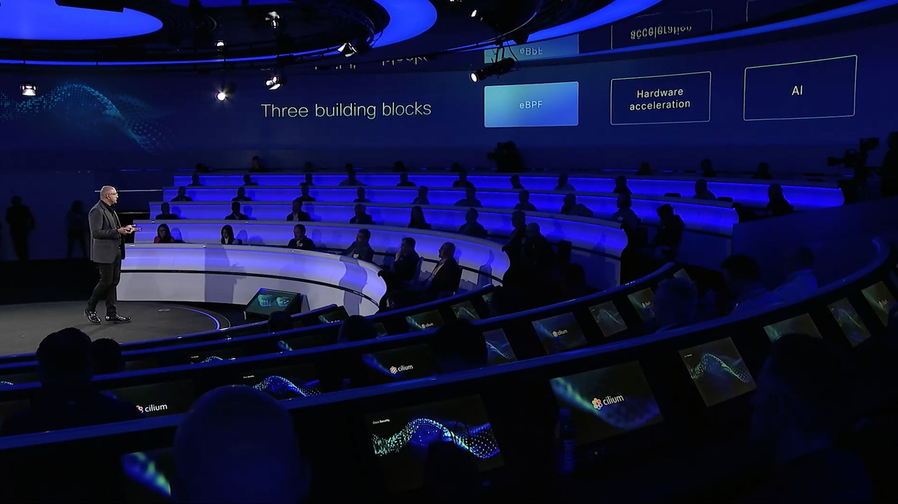

Be there as the future takes shape
Join us in Las Vegas June 2-6, where AI and our Splunk acquisition take center stage. Participate and learn from the experts and be a part of shaping the future.

Better insights. Better experiences.
Cisco Full-Stack Observability (Cisco FSO) brings together data from across your tech stack and your business. Use it to gain insights and deliver optimal application experiences.
Readcustomer story >Get the 2024 Cisco Cybersecurity Readiness Index
How ready are companies to tackle security risks in the modern world? You can find out by checking out our latest research on security readiness across five key pillars.
view trails and demos >
Introducing Cisco Hypershield
Unveiling a new era of AI-native security.
Explore Cisco Hypershield >
